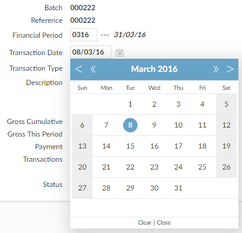

Date Lookup
A calendar is available as the lookup in date fields; you can insert the highlighted date into the field.


To use the calendar lookup:
- Click
 .
.
- If the date field is blank, today's date is highlighted on the calendar.
- If there is already a date in the date field, that date is highlighted.
- To show:
- Subsequent or previous months, click
<
or
>
.
- Subsequent or previous years, click
«
or
»
.
- Click a date on the calendar to insert it into the date field.